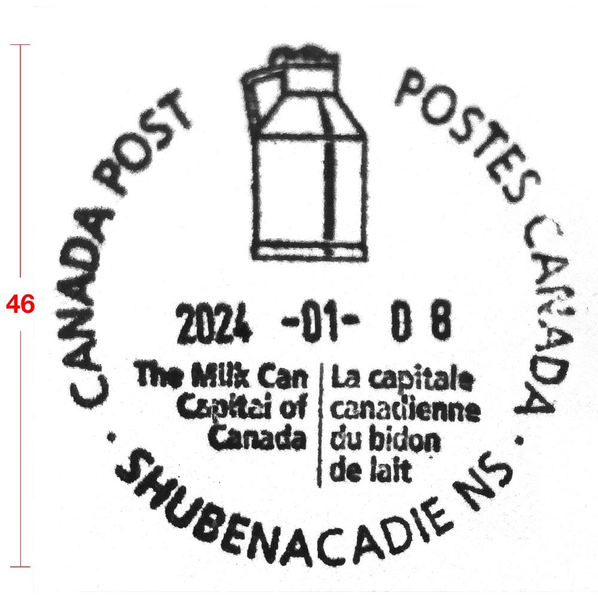

Shubenacadie PO pictorial cancel
The Milk Can Capital of Canada – La capitale canadienne du bidon de lait
- Status
- Active
- Run dates
- 2023-01-01 to present
- Design
- "The Milk Can Capital of Canada / La capitale canadienne du bidon de lait"; milk can
- Ink colour
- Black
- Designer
- Unknown
- Post office
- Shubenacadie PO
2770 Hwy 2
Shubenacadie, NS
B0N 2H0 - Subjects
- milk can, dairy production
Collect it by mail. Send your stamped covers, with a stamped return envelope, to the post office address above. How to collect pictorial cancels by mail · en français
 Middle Musquodoboit POSINCE 1884 / HOME OF HALIFAX COUNTY EXHIBITION
Middle Musquodoboit POSINCE 1884 / HOME OF HALIFAX COUNTY EXHIBITION Noel POPink
Noel POPink Noel POGreen
Noel POGreen Halifax CSCCityscape
Halifax CSCCityscape Halifax CSCExplosion 1917
Halifax CSCExplosion 1917